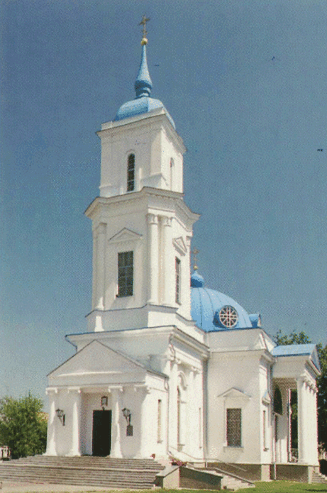

Установка мозаик

В феврале 1926 года председатель строительного комитета А. В. Назаревский ездил в Варшаву, где ходатайсвовал о помощи строящемуся собору. По благословению митрополита Дионисия были переданы для нужд строящегося собора в Барановичах дубовые двери и балюстрада для клиросной ограды из разрушенного Варшавского собора, части иконостасов, киотов, икон и прочая церковная утварь. В числе переданного были три мозаичных образа из Александро-Невского собора в Варшаве. Все переданные церковные вещи были собраны из закрытых, эвакуированных и разрушенных во время первой мировой войны православных храмов. И находились на складе Варшавского митрополичьего собора святой Марии Магдалины.
Все выше перечисленное было перевезено частями по железной дороге в трех вагонах и доставлено в Барановичи 23 июня, 28 июля и 27 августа 1926 года. Церковное имущество было сложено в специально построенном для этого сарае около новостроящегося храма.
Но, увы, в ночь на воскресенье 5 сентября 1926 года, это менее чем через две недели после перевоза, кто-то дерзнул поджечь сарай, и вся утварь стала жертвою огня. Утрата была восполнена митрополитом Дионисием предоставившим почти полный иконостас бывшей домовой церкви в Варшавском Королевском замке. Уцелели от пожара лишь три половинки дверей и три мозаики, которые хранились отдельно от сгоревшего.
23 августа 1928 года все тем же митрополитом Дионисием были пожертвованы киоты, иконы и мозаики из Варшавского собора разрезанные на 40 кусков.
Мозаичные панно и композиции были размещены в Свято-Покровском соборе следующим образом.
В апсиде главного алтаря помещен центральный фрагмент композиции «О Тебе радуется…».
На опорных колоннах ближе к алтарю – мозаичные образы преподобного Иосифа Волоцкого и святителя Алексия митрополита Московского.
Снаружи над северным боковым входом размещена композиция «Собор Архистратига Михаила»
Внутри – «Деисус больший с предстоящими»
Над южным боковым входом снаружи помещена композиция «Спаситель с донатором»
Внутри над южным входом – «Богоматерь с ангельскими чинами»
Установка мозаик была выполнена в промежутке между 1928 и 1931 годами.